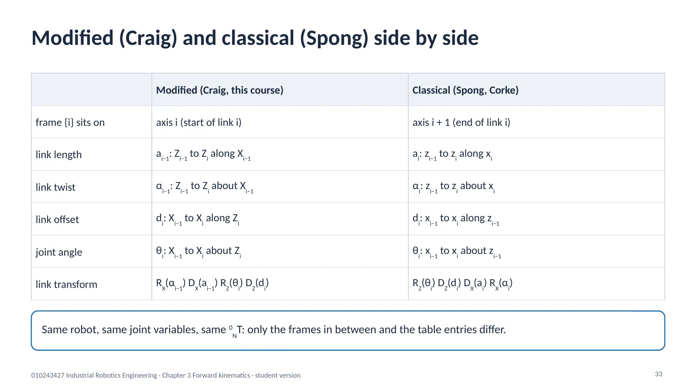
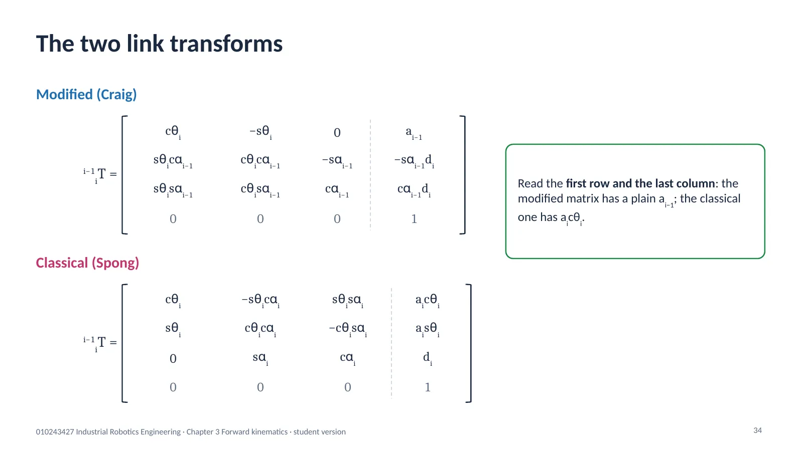
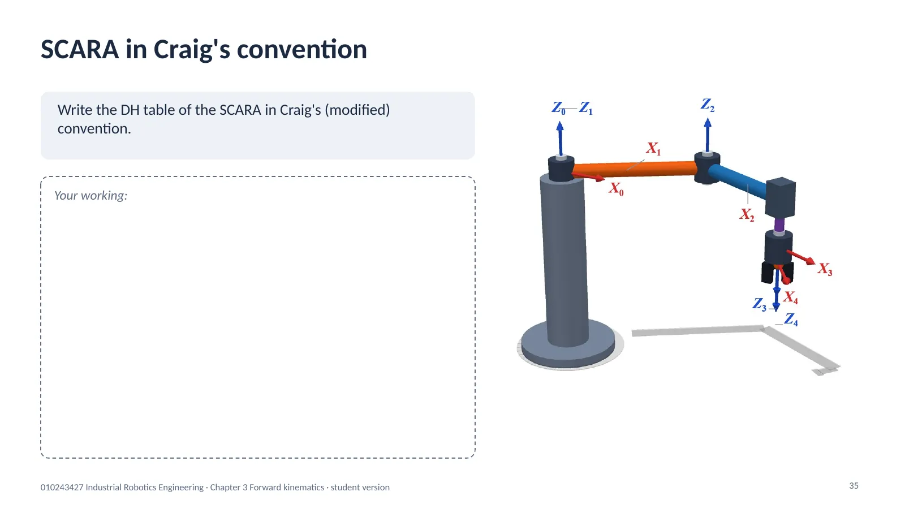
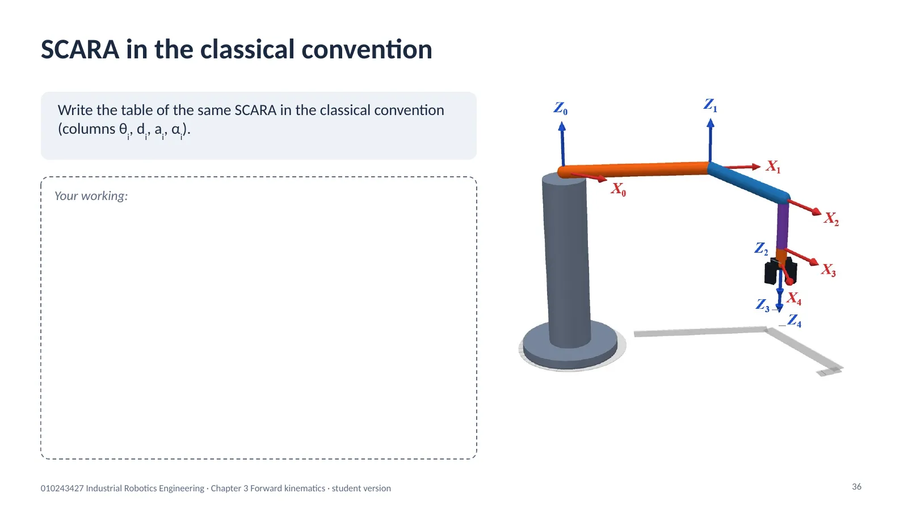

วิชานี้ใช้แบบแผนของ Craig (แบบดัดแปลง: เฟรม {i} อยู่บนแกนของข้อต่อ i) แต่ Spong, Corke และโปรแกรมจำนวนมากใช้แบบดั้งเดิม (เฟรม {i} อยู่บนแกนของข้อต่อ i+1 ที่ปลายก้าน i) ตารางของหุ่นยนต์ตัวเดียวกันจึงหน้าตาต่างกัน หน้านี้ครอบคลุมสไลด์หน้า 33–37 (สไลด์เดิม Part II) มี เครื่องมือ 1 ชิ้น (A) และ 3 โจทย์
This course uses Craig's modified convention (frame {i} on the axis of joint i), but Spong, Corke and many programs use the classical one (frame {i} on the axis of joint i+1, at the far end of link i). The same robot therefore has two different-looking tables. This page covers slides pp. 33–37 (old Part II), with one tool (A) and 3 problems.

วิธีจำ: ดูแถวแรกกับคอลัมน์สุดท้าย แบบดัดแปลงมี ai−1 ตรง ๆ ที่มุมขวาบน (เลื่อนตาม X ก่อนหมุนรอบ Z) แบบดั้งเดิมมี ai cos θi (หมุนรอบ z ก่อนแล้วจึงเลื่อนตาม x) และแบบดั้งเดิมมี di ตรง ๆ ที่แถวสาม ส่วนแบบดัดแปลงมี cos αi−1 di
To remember: look at the first row and the last column. The modified matrix has a plain ai−1 at the top right (it moves along X before turning about Z); the classical one has ai cos θi (it turns about z, then moves along x). The classical matrix also has a plain di in row 3, the modified one cos αi−1 di.


| i | θi | di | ai | αi |
|---|---|---|---|---|
| 1 | θ₁ | 0.352 | 0.070 | −90° |
| 2 | θ₂ | 0 | 0.360 | 0 |